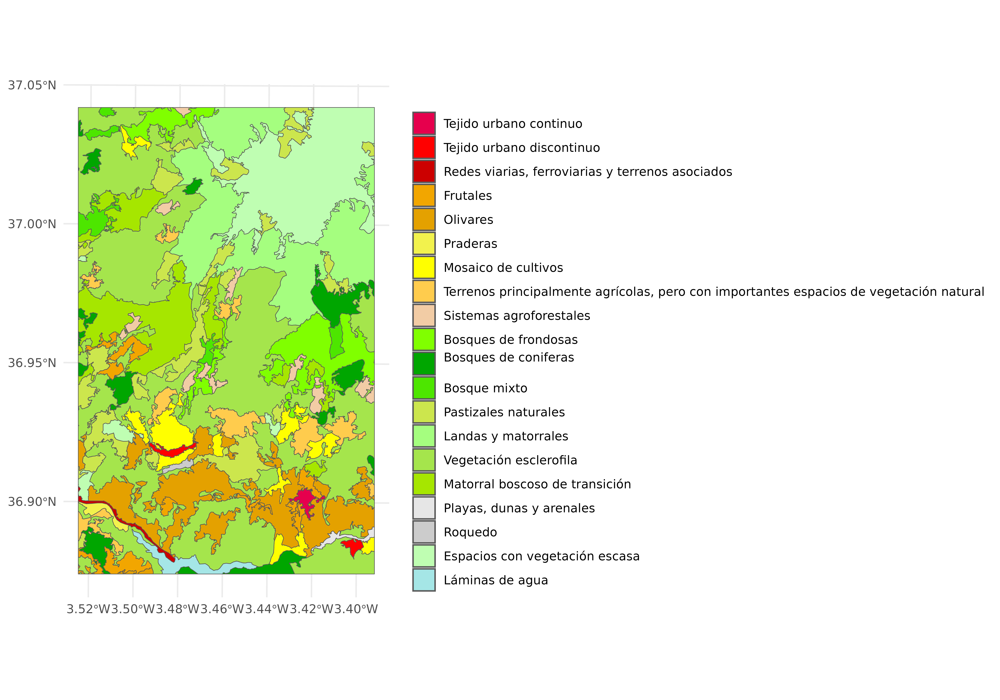
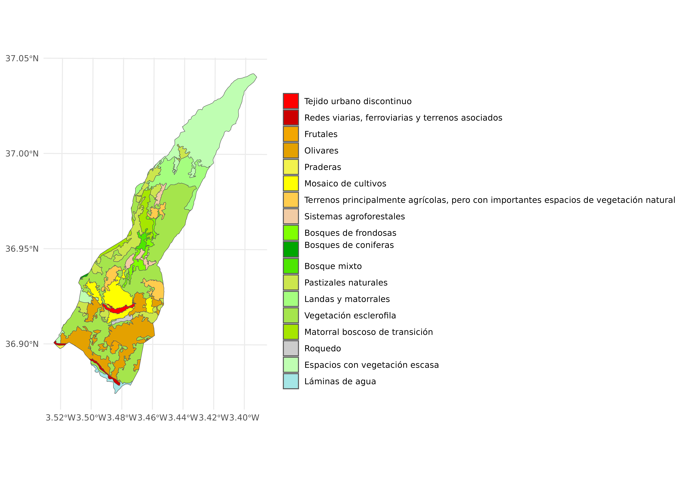
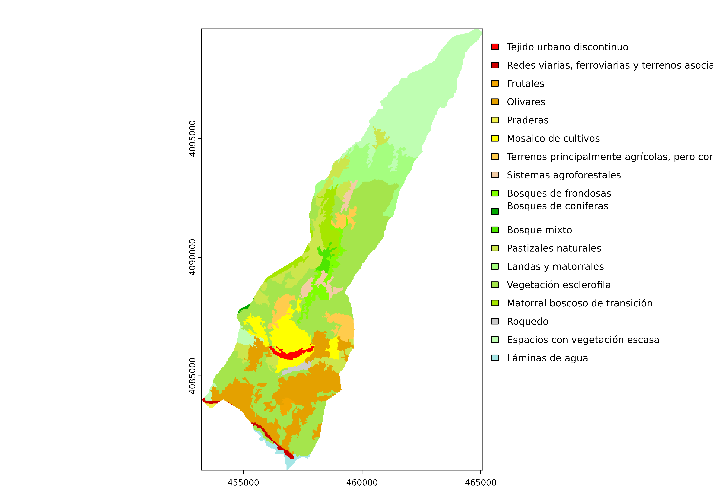

Tools for Working with CORINE Land Cover Data and Styles
Jose Samos (jsamos@ugr.es)
2024-12-07
Source:vignettes/clc.Rmd
clc.RmdIntroduction
This section introduces CORINE Land Cover. It also presents
the clc package, highlighting its functionalities. Finally,
the document’s structure is outlined.
CORINE Land Cover
CORINE Land Cover (CLC) is a standardized geospatial dataset that provides detailed land cover and land use information across Europe. Established under the European Commission’s CORINE (Coordination of Information on the Environment) program, CLC offers consistent and comparable land cover data for environmental monitoring and spatial planning.
CLC aligns with the INSPIRE Directive (Infrastructure for Spatial Information in the European Community), which establishes a framework for spatial data interoperability across Europe. CLC datasets conform to INSPIRE’s standards for land cover data, ensuring compatibility with other datasets and supporting European environmental and planning initiatives.
CLC is available in both vector and raster formats:
Vector Format: Represents land cover polygons, each categorized using predefined CLC codes. This format typically includes an associated style definition (e.g., QML or SLD) that ensures consistent visualization of land cover classes across platforms.
Raster Format: Provides land cover data in a gridded format with cell values corresponding to CLC codes.
Each CLC code is associated with a specific color and description as part of its classification system. Style files (e.g., QGIS QML or SLD files) are often included with CLC datasets, enabling standardized visualization of land cover classes for accurate and intuitive map representation. In GeoPackage and PostGIS formats, styles are stored in a dedicated table, which contains metadata associated with each layer.
The clc package
The goal of the clc package is to support operations
with CLC data, addressing the challenges and specificities it presents,
particularly those related to its associated styles. Its main
characteristics are the following:
It automates the extraction, application, and preservation of styles across workflows.
Tasks such as reading CLC vector data, applying styles, clipping layers, and converting vector data to raster format involve multiple steps. The
clcpackage provides simplified, high-level functions to handle these tasks efficiently.It handles CLC data in both GeoPackage and PostGIS formats, supporting them as sources and destinations.
The clc package includes the clc class,
designed as a comprehensive toolkit for managing and processing CLC
data, enabling users to perform a wide range of geospatial operations
efficiently.
Data Included in the Package
The package includes the following datasets to support workflows with CLC data:
-
clc.gpkg, a GeoPackage file containing the following vector layers:-
clc: A fragment of CLC data for a region in Granada, Spain, stored in vector format. This layer includes the associated style definitions, which are stored within the same GeoPackage. The data was sourced from the CNIG (Centro Nacional de Información Geográfica).
-
lanjaron: A polygonal vector layer representing the boundaries of the municipality of Lanjarón, located in Granada, Spain. This data was sourced from the DERA (Datos Espaciales de Referencia de Andalucía).
-
-
mdt.tif, a raster file containing a Digital Terrain Model (DTM) for the same region as theclcandlanjaronlayers. This data was also obtained from the CNIG. The DTM data is not actually used; only its format is needed as a template to create a base raster.
These datasets provide a foundational base for exploring the functionalities of the package, including vector and raster data processing and visualization.
Class-Based Operations
Key features of the clc class include the ability to
read CLC datasets directly from widely used geospatial databases, such
as GeoPackage or PostGIS.
The class also facilitates advanced visualization of CLC vector data, complete with associated styles, to accurately represent land cover classifications. Users can further refine datasets by clipping CLC data to specific regions of interest while preserving style consistency, enabling localized analyses.
In addition to vector processing, the clc class supports
the conversion of CLC vector data into raster formats, expanding its
utility for raster-based analyses. Once rasterized, users can visualize
CLC raster data with styles that mirror the original vector
representation, maintaining interpretability.
To support data sharing and further processing, the clc
class includes functionality for exporting both CLC data and their
associated styles back to GeoPackage or PostGIS, ensuring data integrity
and compatibility with external systems.
The following provides a detailed example illustrating the functionalities described earlier.
Create an object of class clc
We start by showing how to create an object of class clc
from a vector layer. The source parameter specifies the
source of the vector data, which can be a path to a GeoPackage file or a
DBI connection to a PostGIS database. The
layer_name parameter is the name of the specific layer in
the source to be used.
library(clc)
source_gpkg <- system.file("extdata", "clc.gpkg", package = "clc")
clc_data <- clc(source = source_gpkg, layer_name = "clc")To create a clc object, the vector layer must have
associated styles in its source. These styles are essential as they
define the visual appearance of the CLC data, including category colors
and labels.
We can include a parameter called field, which is
optional. It should only be provided if the function is unable to
automatically determine the field containing the CLC codes in the layer.
This can happen if there are multiple fields or none at all. If
field is set to NULL (default), the function
will attempt to locate the appropriate column that contains the CLC
codes based on the layer’s structure.
The function returns an object of class clc, which can
then be used for further analysis and visualization.
In this case, the following code would achieve the same result, assuming the database contains the same layer and styles stored.
library(clc)
conn <- RPostgres::dbConnect(
RPostgres::Postgres(),
dbname = 'exampledb',
host = 'localhost',
port = '5432',
user = 'user',
password = 'password'
)
clc_data <- clc(source = conn, layer_name = "clc")
DBI::dbDisconnect(conn)This example demonstrates how to use a PostGIS database connection
instead of a GeoPackage file. However, since the example is designed to
run within the package and without external dependencies like a live
database, we use the local clc.gpkg file instead.
Plot of Vector CLC Data
Once the object is created with its associated style, the next step is to visualize the data with the applied style. This is achieved by using the following function:
clc_data |>
plot_clc()
This command automatically considers the style that was previously
associated with the clc object. It ensures that the vector
data is displayed with the appropriate colors and descriptions, as
defined in the source, without the need for further styling
adjustments.
The vector plot for CLC data is created using the
ggplot2::ggplot function. This function is defined using
other functions from the ggplot2 package to ensure the plot
is displayed with appropriate styling and formatting.
However, instead of directly using plot_clc, the
prepare_plot function is included in the package to define
the basic elements of the plot. This function prepares the necessary
components for visualization, but leaves the final presentation and
customization up to the user.
To complete the plot configuration, the missing elements, such as
color and labels, can be obtained using the get_levels
function. These elements can then be used to define the presentation
according to the user’s preferences. For example, the following code
achieves the same result as plot_clc, but provides more
flexibility for further customization:
p <- clc_data |>
prepare_plot()
levels <- clc_data |>
get_levels()
p <- p +
ggplot2::scale_fill_manual(
values = stats::setNames(levels$color, levels$id),
labels = stats::setNames(levels$description, levels$id),
name = ""
) +
ggplot2::theme(
legend.position = "right",
legend.key.height = ggplot2::unit(2, "cm"),
legend.title = ggplot2::element_text(size = 12),
legend.text = ggplot2::element_text(size = 10)
) +
ggplot2::theme_minimal()
pThis code customizes the plot by defining the color scale, adding
labels, and modifying the appearance of the legend. It allows for full
control over how the data is presented, beyond the default configuration
provided by plot_clc.
Clipping CLC Data to a Region of Interest
In this section, we focus on the process of clipping CLC data to a
region of interest, using the provided cut_to_extent
function. This function is an essential tool for isolating specific
areas within the CLC data, allowing users to work with smaller, relevant
subsets of the data.
First, we read the clipping layer (the region of interest) from the
source GeoPackage, which defines the geographical boundaries for the
clip. After loading the region, we use the cut_to_extent
function to clip the CLC data to this region.
Once the data is clipped, it is visualized using the
plot_clc function, which applies the appropriate styling
and provides a clear representation of the clipped CLC data.
Here’s an example of how to clip the CLC data to a region and visualize the result:
# Read the clipping layer (region of interest)
region <- sf::st_read(source_gpkg, layer = "lanjaron", quiet = TRUE)
# Clip the CLC data to the region of interest
clc_clipped <- clc_data |>
cut_to_extent(region)
# Visualize the clipped CLC data with its associated style
clc_clipped |>
plot_clc()
This workflow demonstrates how the cut_to_extent
function can be used to subset CLC data by a specific region and
visualize the clipped data, all while retaining the correct styling.
Saving CLC Data and Styles
In this section, we focus on how to save the CLC data, along with its associated styles, to a GeoPackage. This process ensures that the data is preserved in a standard format for future use, with the correct styling embedded in the file.
For example, after clipping the CLC data, you may want to store the
resulting subset along with the style information in a GeoPackage file
(new or existing one). The save_to function is used to
write both the CLC data and its styles to the specified GeoPackage
destination.
The following example demonstrates how to save the clipped CLC data and its styles to a new GeoPackage:
# Define the output GeoPackage file
output_gpkg <- tempfile(fileext = ".gpkg")
# Capture output to suppress messages (optional)
sink(tempfile())
# Save the clipped data and its styles to the new GeoPackage
clc_clipped |>
save_to(output_gpkg)
# Stop capturing output
sink()This workflow saves the clipped CLC data to a new GeoPackage file, ensuring that both the data and its associated styles are properly stored. You can later access the file, preserving the full context of the original dataset, including the applied styles.
In addition to saving the clipped data to a GeoPackage, you can also save it to a PostGIS database. The following example demonstrates it. However, this example is not executed here to avoid creating external dependencies on a database connection.
conn <- RPostgres::dbConnect(
RPostgres::Postgres(),
dbname = 'exampledb2',
host = 'localhost',
port = '5432',
user = 'user',
password = 'password'
)
clc_clipped |>
save_to(conn, 'exampledb2')
DBI::dbDisconnect(conn)The same save_to function can be used with a PostGIS
connection, just like with GeoPackage, enabling flexibility in where the
data is stored.
Copying Styles
The copy_to function in the clc package
enables you to copy only the style definitions from one source and apply
them to a specified layer or all layers in the destination. If no
specific layer is indicated, the style is applied to all layers in the
destination.
Below is an example demonstrating how to use
copy_to:
# Create a new GeoPackage without style definition
destination_gpkg <- tempfile(fileext = ".gpkg")
clc_layer <- sf::st_read(source_gpkg, layer = "clc", quiet = TRUE)
sf::st_write(
clc_layer,
destination_gpkg,
layer = "clc2",
delete_layer = TRUE,
quiet = TRUE
)
# Copy the style to the new GeoPackage
clc_clipped |>
copy_to(to = destination_gpkg, layers = "clc2")
# Create a clc object from the new GeoPackage and view it
clc_data2 <- clc(source = destination_gpkg, layer_name = "clc2")
clc_data2 |>
plot_clc()
This workflow demonstrates the flexibility of the clc
package in managing styles across multiple GeoPackages. The
copy_to function can also be used with a PostGIS database
as the destination.
Converting CLC Data to Raster Format
The as_raster function in the clc package
provides an efficient way to convert vector-based CLC data into a raster
format. This is particularly useful when working with raster-based
analysis workflows
The function allows specifying a base raster for consistent alignment and resolution with existing raster data. If no base raster is provided, a custom resolution can be specified to generate the raster grid.
The raster output retains the CLC categories, ensuring that the data remains consistent with its original classification.
Below are two examples demonstrating the use of
as_raster:
- If a base raster is available, you can use it to define the extent, resolution, and coordinate reference system (CRS) for the output raster.
raster_path <- system.file("extdata", "mdt.tif", package = "clc")
base_raster <- terra::rast(raster_path)
clc_raster1 <- clc_clipped |>
as_raster(base_raster = base_raster)- When no base raster is available, you can specify a resolution to define the raster grid.
clc_raster2 <- clc_clipped |>
as_raster(resolution = 50)These examples demonstrate how as_raster streamlines the
conversion process, making it easier to integrate vector-based CLC data
into raster workflows.
Applications of the Generated Raster
After converting CLC data to raster format using the
as_raster function, the raster can be used for various
applications. Below, we demonstrate two common use cases.
These examples illustrate the versatility of the raster output, making it suitable for visualization, sharing, or extended GIS workflows.
Visualizing the Raster Data
For raster visualization, the terra::plot function is
used with the color scheme configured (using the col
parameter) to match the CLC styles. The plot_clc function
allows customization of all other parameters supported by
terra::plot.
clc_raster1 |>
plot_clc()
This renders the raster using the colors and descriptions associated with the original CLC styles, ensuring a clear and accurate representation of the data.
Getting the Raster
The get_raster function extracts a
terra::SpatRaster object for further customization,
analysis, or storage.
Once the raster is obtained, it can be exported to a file format such as GeoTIFF. This is particularly useful for sharing the data or for further processing in GIS software.
clc_r <- clc_raster1 |>
get_raster()
output_tif <- tempfile(fileext = ".tif")
terra::writeRaster(clc_r,
output_tif,
filetype = "GTiff",
overwrite = TRUE)This workflow creates a GeoTIFF file containing the rasterized CLC data, making it compatible with most GIS platforms and software.
Conclusions
The clc package provides an efficient and user-friendly
framework for managing and processing CLC data. By automating key
operations such as style handling, clipping, rasterization, and data
export, it simplifies workflows and enhances interoperability between
geospatial formats like GeoPackage and PostGIS.
Through its flexible and well-documented functionality, the package addresses the complexities associated with CLC data, ensuring accurate visualization and seamless integration into GIS workflows. The detailed examples and workflows presented demonstrate its potential to streamline CLC data management, making it a valuable tool for environmental analysis, spatial planning, and research applications.